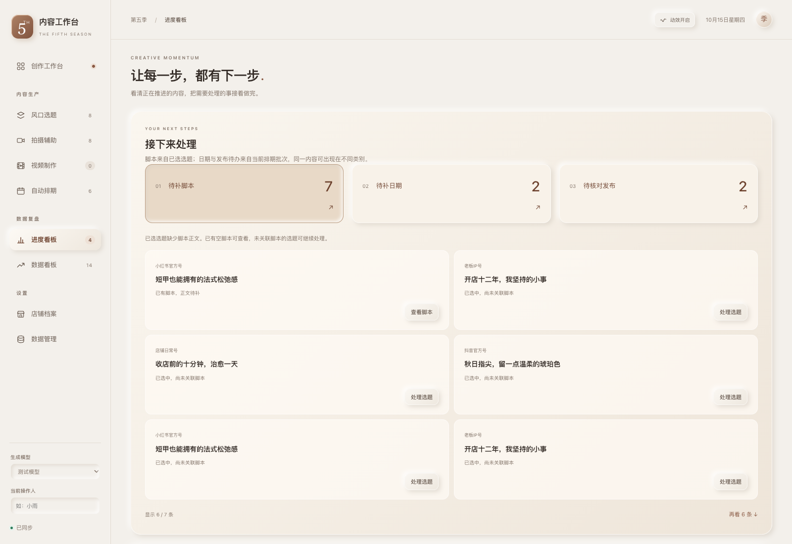
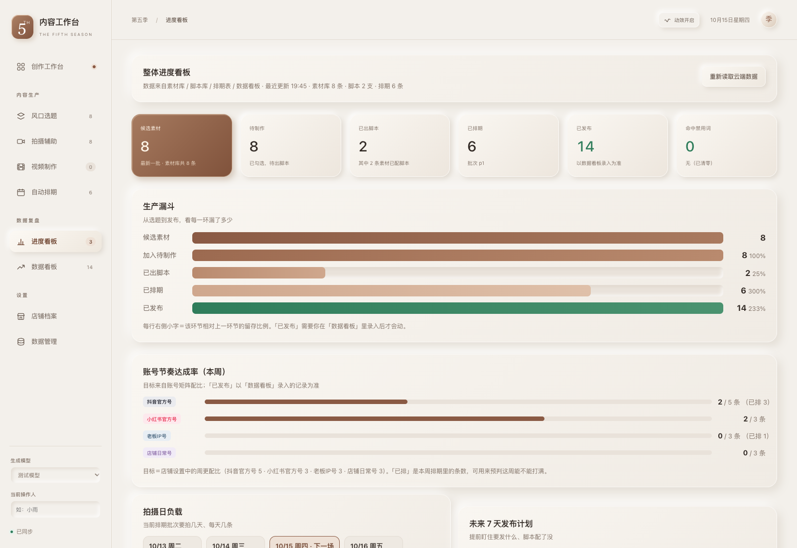
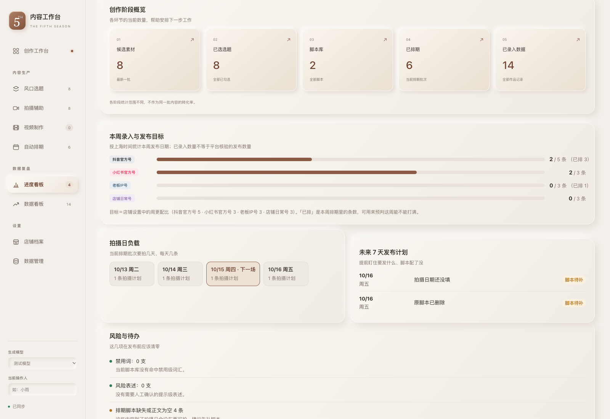
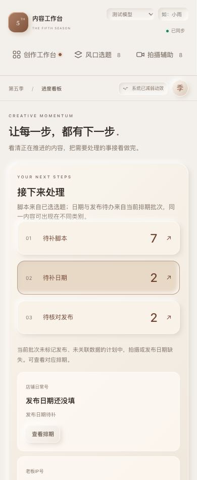

让每一步，都有下一步。
待补脚本、待补日期、待核对发布分开处理，点击可定位具体内容。阶段概览注明各自统计范围。
以下为同一组隔离示例数据的实际浏览器截图，不连接云端。




计划时间到达不会被当作已经发布。录入表现仅打开原表单，仍由你确认并保存。
待补脚本、待补日期、待核对发布分开处理，点击可定位具体内容。阶段概览注明各自统计范围。
以下为同一组隔离示例数据的实际浏览器截图，不连接云端。




计划时间到达不会被当作已经发布。录入表现仅打开原表单，仍由你确认并保存。